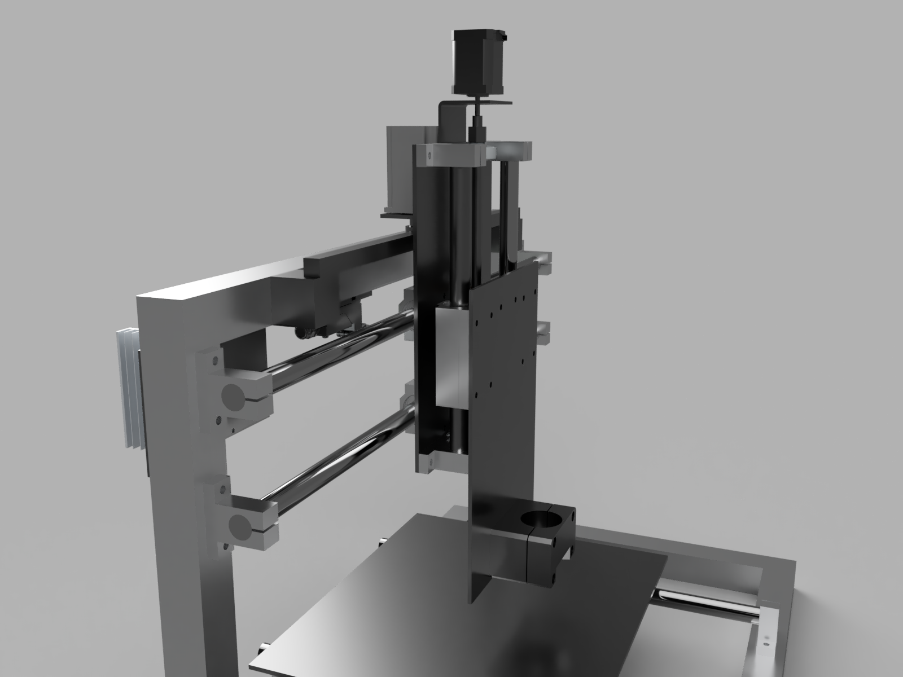
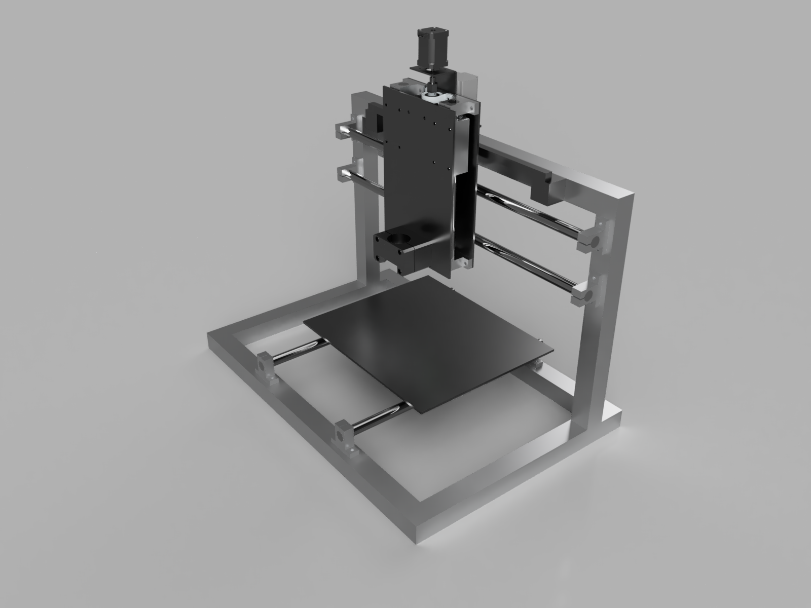

CNC Router - Part 1: Design

{kind=link}
Design
Major design criteria for CNC router were directly influenced by lessons learned from All-metal 3D Printer
- FDM printer are slow, it's worth sacrificing Z travel for additional rigidity.
- Use single motor for each axis to guarantee squareness after homing.
- As this is still research slash fun project, keep costs low by reusing as many parts as possible.
- Keep it manufacture-able with tools I have, but try limiting places where it will require tuning.
- Try not to over engineer, as it will never be real CNC router without complete rebuild (IMO).

{kind=link}
Additional hardware required
Bill-of-materials above what I had already were:
- 1500mm linear shaft (20mm diameter) for X axis (to be cut in half)
- Two KP001 bearing shaft supports for Z axis screw.

Rigidity considerations
Two most important lessons I learned from 3D printer projects were:
- Everything is bending.
- Cheap linear bearings are garbage.
- Make do-it-yourself adjustable SMA20LGUU by opening side of each bearing with angle grinder and tapping holes for preload adjustment screws (this will require changing internal LM20UU for LM20AJ)
- Exchange each SMA20LGUU bearing into two SMA20AJ bearings (with adjustable preload).